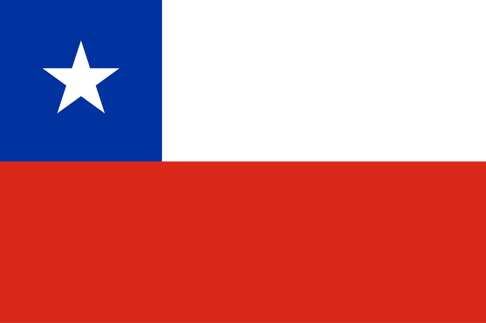

About Me

My name is Cristobal and I'm from Chillan, Chile. I am currently studying web development and I'm passionate about creating beautiful and functional websites. I love learning new technologies and solving complex problems through code.
Chillan, Chile

Official Flag of Chile
Chillan is a city in Chile's Ñuble Region, known for its rich cultural heritage and as the birthplace of several notable Chilean figures. The city is surrounded by beautiful landscapes including the Andes Mountains and fertile agricultural lands.